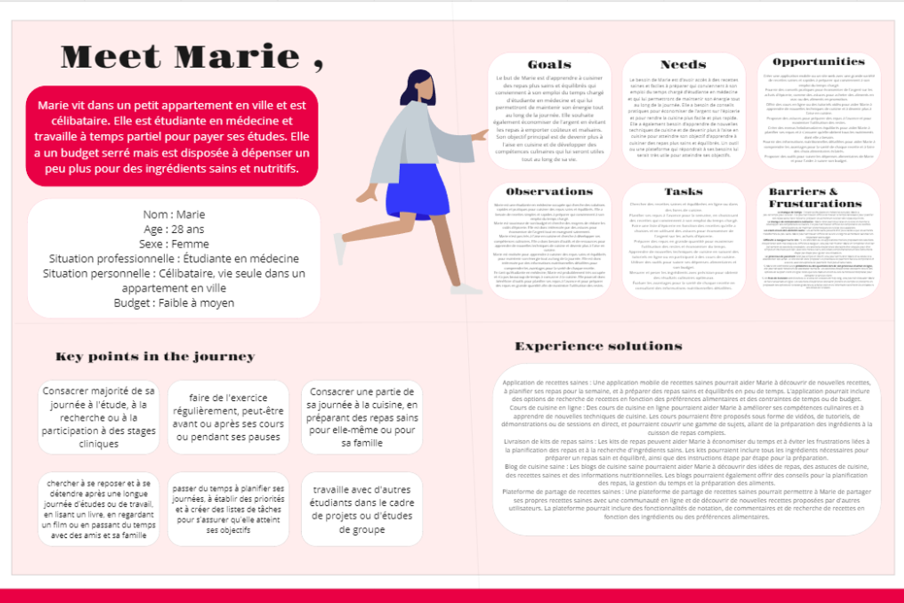

UI DESIGN
Figma
Maquettes, composants, prototype haute fidélité.
Design Thinking · Low-fi · High-fi · Responsive
Cook Better est un site web responsive destiné aux amoureux de la cuisine souhaitant apprendre à préparer des repas sains via des parcours guidés, des recettes structurées et une interface accessible.


Refonte V2 — j'ai repris ce projet pour retravailler entièrement la direction artistique ("Forest Premium" : vert profond, doré, typographie éditoriale) et construire un vrai design system, sur les versions desktop et mobile.

Avant de reprendre l'identité visuelle, j'ai retravaillé la structure de chaque écran en niveaux de gris, pour le desktop comme pour le mobile : hiérarchie de l'information, priorité des actions (voir la recette du soir, ajouter au plan, démarrer la cuisson), navigation par onglets Home/Discover/Plan/Profile.
Desktop


Mobile


J'ai ensuite appliqué l'identité "Forest Premium" (vert profond, doré, fond ivoire, typographie éditoriale) et un design system de composants réutilisables, sur l'ensemble du parcours desktop et mobile : accueil, fiche recette et mode cuisson.
Desktop


Mobile


Pour garantir la cohérence entre desktop et mobile, j'ai formalisé un design system complet : palette (vert forêt, blanc cassé, or, tons sémantiques), typographie éditoriale, échelle d'espacement, iconographie, et une bibliothèque de composants réutilisables (cartes recette, sélecteurs, timers, navigation, statistiques).

Accédez au prototype Figma interactif pour parcourir les écrans.
UI DESIGN
Figma
Maquettes, composants, prototype haute fidélité.

Assets
Photoshop
Retouches visuelles et optimisation.

Organisation
Drive
Partage documentation & livrables.

Idéation
Miro
Brainstorming & parcours utilisateur.